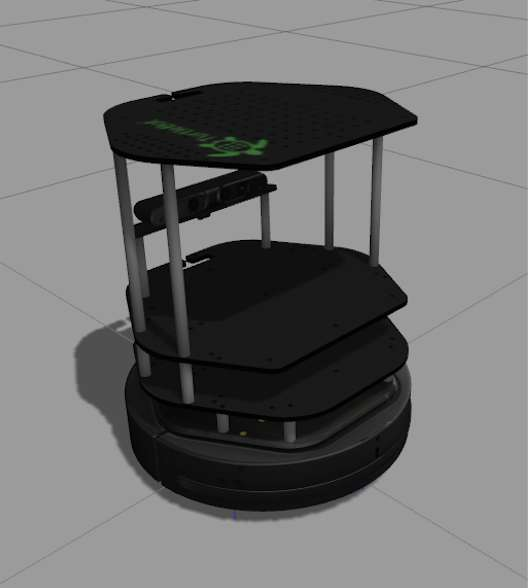

<img src="img/kobuki_wall.png" width="800"/>
<!-- <img src="img/rosject.png" width="250" style="float:left;" /> --><!--* ROSject Link: http://bit.ly/2LN3ir7â* Package Name: **turtlebot_gazebo**â* Launch File: **main.launch**-->**Estimated time to completion:** 1'5 hoursâ**Simulated robot:** Turtlebotâ**What will you learn with this unit?**â* How to structure and launch ROS programs (packages and launch files)* How to create basic ROS programs (Python based)* Basic ROS concepts: Nodes, Parameter Server, Environment Variables, RoscoreEstimated time to completion: 1'5 hours
Simulated robot: Turtlebot
What will you learn with this unit?
<img src="img/kobuki.jpg" width="212" height="236" />
## What is ROS? This is probably the question that has brought you all here. Well, let me tell you that you are still not prepared to understand the answer to this question, so... let's get some work done first.This is probably the question that has brought you all here. Well, let me tell you that you are still not prepared to understand the answer to this question, so... let's get some work done first.
On the right corner of the screen, you have your first simulated robot: the Turtlebot 2 robot against a large wall.On the right corner of the screen, you have your first simulated robot: the Turtlebot 2 robot against a large wall.
<img src="img/screen_1.jpg"/><h3>**Let's move that robot!**</h3><br>How can you move the Turtlebot?<br>The easiest way is by executing an existing ROS program to control the robot. A ROS program is executed by using some special files called <b>launch files</b>.<br><br>Since a previously-made ROS program already exists that allows you to move the robot using the keyboard, let's <i>launch</i> that ROS program to teleoperate the robot. <p style="background:#407EAF;color:white;">**Example 1.1**</p>Example 1.1
Execute the following command in WebShell number #1<br>â<table style="float:left;background: #407EAF"><tr><th><p class="transparent">Execute in WebShell #1</p></th></tr></table><br>Execute the following command in WebShell number #1
|
Execute in WebShell #1 |
|---|
roslaunch turtlebot_teleop keyboard_teleop.launch<table style="float:left;background: #407EAF"><tr><th><p style="background: #407EAF; color:white">WebShell #1 Output</p></th></tr></table>|
WebShell #1 Output |
|---|
Control Your Turtlebot!---------------------------Moving around: u i o j k l m , .âq/z : increase/decrease max speeds by 10%w/x : increase/decrease only linear speed by 10%e/c : increase/decrease only angular speed by 10%space key, k : force stopanything else : stop smoothlyâCTRL-C to quitNow, you can use the keys indicated in the WebShell Output in order to move the robot around. The basic keys are the following:Now, you can use the keys indicated in the WebShell Output in order to move the robot around. The basic keys are the following:
<img src="img/keys_move_turtle.png" width="1000" />Try it!! When you're done, you can press **Ctrl+C** to stop the execution of the program.Try it!! When you're done, you can press Ctrl+C to stop the execution of the program.
**<i class="ign_green">roslaunch</i>** is the command used to launch a ROS program. Its structure goes as follows:roslaunch is the command used to launch a ROS program. Its structure goes as follows:
roslaunch <package_name> <launch_file>As you can see, that command has two parameters: the first one is <b>the name of the package</b> that contains the launch file, and the second one is <b>the name of the launch file</b> itself (which is stored inside the package).As you can see, that command has two parameters: the first one is the name of the package that contains the launch file, and the second one is the name of the launch file itself (which is stored inside the package).
<p style="background:#407EAF;color:white;">END **Example 1.1**</p><br>END Example 1.1
ROS uses <b>packages</b> to organize its programs. You can think of a package as <b>all the files that a specific ROS program contains</b>; all its cpp files, python files, configuration files, compilation files, launch files, and parameters files.ââAll those files in the package are organized with the following structure:ROS uses packages to organize its programs. You can think of a package as all the files that a specific ROS program contains; all its cpp files, python files, configuration files, compilation files, launch files, and parameters files.
All those files in the package are organized with the following structure:
* **launch** folder: Contains launch files* **src** folder: Source files (cpp, python)* **CMakeLists.txt**: List of cmake rules for compilation* **package.xml**: Package information and dependenciesTo go to any ROS package, ROS gives you a command named <i class="ign_green">roscd</i>. When typing:To go to any ROS package, ROS gives you a command named roscd. When typing:
roscd <package_name>It will take you to the path where the package <i>package_name</i> is located.<br>It will take you to the path where the package package_name is located.
<p style="background:#407EAF;color:white;">**Example 1.2**</p><br>Example 1.2
Go to WebShell #1, navigate to the turtlebot_teleop package, and check that it has that structure.<br>â<table style="float:left;background: #407EAF"><tr><th><p class="transparent">Execute in WebShell #1</p></th></tr></table><br>Go to WebShell #1, navigate to the turtlebot_teleop package, and check that it has that structure.
|
Execute in WebShell #1 |
|---|
roscd turtlebot_teleopls<img src="img/turtlebot_teleop_contents.png" width="800" />Every ROS program that you want to execute is organized in a package.<br>Every ROS program that you create will have to be organized in a package.<br>Packages are the main organization system of ROS programs.Every ROS program that you want to execute is organized in a package.
Every ROS program that you create will have to be organized in a package.
Packages are the main organization system of ROS programs.
<p style="background:#407EAF;color:white;">END **Example 1.2**</p><br>END Example 1.2
We've seen that ROS uses launch files in order to execute programs. But... how do they work? Let's have a look.âWe've seen that ROS uses launch files in order to execute programs. But... how do they work? Let's have a look.
<p id="example-1.3" style="background:#407EAF;color:white;">**Example 1.3**</p><br>Example 1.3
Open the **launch** folder inside the **turtlebot_teleop** package and check the **keyboard_teleop.launch file**.<br>â<table style="float:left;background: #407EAF"><tr><th><p class="transparent">Execute in WebShell #1</p></th></tr></table><br>Open the launch folder inside the turtlebot_teleop package and check the keyboard_teleop.launch file.
|
Execute in WebShell #1 |
|---|
roscd turtlebot_teleopcd launchcat keyboard_teleop.launch<table style="float:left;background: #407EAF"><tr><th><p style="background: #407EAF; color:white">WebShell #1 Output</p></th></tr></table>|
WebShell #1 Output |
|---|
<launch> <!-- turtlebot_teleop_key already has its own built in velocity smoother --> <node pkg="turtlebot_teleop" type="turtlebot_teleop_key.py" name="turtlebot_teleop_keyboard" output="screen"> <param name="scale_linear" value="0.5" type="double"/> <param name="scale_angular" value="1.5" type="double"/> <remap from="turtlebot_teleop_keyboard/cmd_vel" to="/cmd_vel"/> <!-- cmd_vel_mux/input/teleop"/--> </node></launch><font class='ign_red'>In the launch file, you have some extra tags for setting parameters and remaps. For now, don't worry about those tags and focus on the node tag.</font>All launch files are contained within a **<launch>** tag. Inside that tag, you can see a **<node>** tag, where we specify the following parameters:All launch files are contained within a <launch> tag. Inside that tag, you can see a <node> tag, where we specify the following parameters:
â1. **pkg="package_name"** # Name of the package that contains the code of the ROS program to execute 2. **type="python_file_name.py"** # Name of the program file that we want to execute 3. **name="node_name"** # Name of the ROS node that will launch our Python file 4. **output="type_of_output"** # Through which channel you will print the output of the Python file <p style="background:#407EAF;color:white;">**END Example 1.3**</p>END Example 1.3
Until now we've been checking the structure of an already-built package... but now, let's create one ourselves.âWhen we want to create packages, we need to work in a very specific ROS workspace, which is known as **<i> the catkin workspace</i>**. The catkin workspace is the directory in your hard disk where your own **ROS packages must reside** in order to be usable by ROS. Usually, the **<i>catkin workspace</i>** directory is called **<i>catkin_ws</i>**.Until now we've been checking the structure of an already-built package... but now, let's create one ourselves.
When we want to create packages, we need to work in a very specific ROS workspace, which is known as the catkin workspace. The catkin workspace is the directory in your hard disk where your own ROS packages must reside in order to be usable by ROS. Usually, the catkin workspace directory is called catkin_ws.
<p id="example-1.4" style="background:#407EAF;color:white;">**Example 1.4**</p><br>Go to the catkin_ws in your WebShell.ââIn order to do this, type **<i>roscd</i>** in the <i>shell</i>. You'll see that you are thrown to a **<i>catkin_ws/devel</i>** directory. Since you want to go to the workspace, just type **<i>cd ..</i>** to move up 1 directory. You must end up here in the **<i>/home/user/catkin_ws</i>**.<br>â<table style="float:left;background: #407EAF"><tr><th><p class="transparent">Execute in WebShell #1</p></th></tr></table>Example 1.4
In order to do this, type roscd in the shell. You'll see that you are thrown to a catkin_ws/devel directory. Since you want to go to the workspace, just type cd .. to move up 1 directory. You must end up here in the /home/user/catkin_ws.
|
Execute in WebShell #1 |
|---|
roscdcd ..pwd<p style="background: #407EAF">WebShell #1 Output</p>WebShell #1 Output
user ~ $ pwd/home/user/catkin_wsInside this workspace, there is a directory called **src**. This folder will contain all the packages created. Every time you want to create a new package, you have to be in this directory (**catkin_ws/src**). Type in your WebShell **<i>cd src</i>** in order to move to the source directory.<br>â<table style="float:left;background: #407EAF"><tr><th><p class="transparent">Execute in WebShell #1</p></th></tr></table>Inside this workspace, there is a directory called src. This folder will contain all the packages created. Every time you want to create a new package, you have to be in this directory (catkin_ws/src). Type in your WebShell cd src in order to move to the source directory.
|
Execute in WebShell #1 |
|---|
cd srcNow we are ready to create our first package! In order to create a package, type in your WebShell:<br>â<table style="float:left;background: #407EAF"><tr><th><p class="transparent">Execute in WebShell #1</p></th></tr></table>Now we are ready to create our first package! In order to create a package, type in your WebShell:
|
Execute in WebShell #1 |
|---|
catkin_create_pkg my_package rospyThis will create inside our **src** directory a new package with some files in it. We'll check this later. Now, let's see how this command is built:This will create inside our src directory a new package with some files in it. We'll check this later. Now, let's see how this command is built:
catkin_create_pkg <package_name> <package_dependecies>The **package_name** is the name of the package you want to create, and the **package_dependencies** are the names of other ROS packages that your package depends on.The package_name is the name of the package you want to create, and the package_dependencies are the names of other ROS packages that your package depends on.
<p style="background:#407EAF;color:white;">END Example 1.4</p>END Example 1.4
<p style="background:#407EAF;color:white;">**Example 1.5**</p>Example 1.5
In order to check that our package has been created successfully, we can use some ROS commands related to packages. For example, let's type:<br>â<table style="float:left;background: #407EAF"><tr><th><p class="transparent">Execute in WebShell #1</p></th></tr></table>In order to check that our package has been created successfully, we can use some ROS commands related to packages. For example, let's type:
|
Execute in WebShell #1 |
|---|
rospack listrospack list | grep my_packageroscd my_package <span style="color:green;"><b>rospack list</b></span>: Gives you a list with all of the packages in your ROS system.<br><span style="color:green;"><b>rospack list | grep my_package</b></span>: Filters, from all of the packages located in the ROS system, the package named <i>my_package</i>.<br><span style="color:green;"><b>roscd my_package</b></span>: Takes you to the location in the Hard Drive of the package, named <i>my_package</i>.<br><br>You can also see the package created and its contents by just opening it through the IDE (similar to <a href="#fig-1.1">{Figure 1.1}</a>)<br>rospack list: Gives you a list with all of the packages in your ROS system.
rospack list | grep my_package: Filters, from all of the packages located in the ROS system, the package named my_package.
roscd my_package: Takes you to the location in the Hard Drive of the package, named my_package.
You can also see the package created and its contents by just opening it through the IDE (similar to {Figure 1.1})
<figure> <img id="fig-1.1" src="img/my_package.png"><br> <center> <figcaption>Fig.1.1 - IDE created package my_package</figcaption></center></figure>
<p style="background:#407EAF;color:white;">END **Example 1.5**</p><br>END Example 1.5
At this point, you should have your first package created... but now you need to do something with it! Let's do our first ROS program! At this point, you should have your first package created... but now you need to do something with it! Let's do our first ROS program!
<p style="background:#407EAF;color:white;">**Example 1.6**</p>Example 1.6
1- Create in the **src** directory in <span style="color:green;">my_package</span> a Python file that will be executed. For this exercise, just copy this simple python code <a href="#simple_python">simple.py</a>. You can create it directly by **RIGHT clicking** on the IDE on the src directory of your package, selecting <span style="color: orange">New File,</span> and writing the name of the file on the box that will appear.1- Create in the src directory in my_package a Python file that will be executed. For this exercise, just copy this simple python code simple.py. You can create it directly by RIGHT clicking on the IDE on the src directory of your package, selecting New File, and writing the name of the file on the box that will appear.
<img src="img/new_file.png"/>A new Tab should have appeared on the IDE with empty content.Then, copy the content of <a href="#simple_python">simple.py</a> into the new file. Finally, press **Ctrl-S** to save your file with the changes. The Tab in the IDE will go from <i>Green</i> to <i>no color</i> (see pictures below).<br>A new Tab should have appeared on the IDE with empty content.
Then, copy the content of simple.py into the new file. Finally, press Ctrl-S to save your file with the changes. The Tab in the IDE will go from Green to no color (see pictures below).
<img src="img/non_saved.png" /><img src="img/saved.png" />2- Create a <i class="ign_green">launch</i> directory inside the package named <span class="ign_green">my_package</span> <a href="#example-1.4">{Example 1.4}</a>.<br><table style="float:left;background: #407EAF"><tr><th><p class="transparent">Execute in WebShell #1</p></th></tr></table>2- Create a launch directory inside the package named my_package {Example 1.4}.
|
Execute in WebShell #1 |
|---|
roscd my_packagemkdir launchYou can also create it through the IDE.You can also create it through the IDE.
3- Create a new launch file inside the launch directory.<br><table style="float:left;background: #407EAF"><tr><th><p class="transparent">Execute in WebShell #1</p></th></tr></table>3- Create a new launch file inside the launch directory.
|
Execute in WebShell #1 |
|---|
touch launch/my_package_launch_file.launchYou can also create it through the IDE.You can also create it through the IDE.
4- Fill this launch file as we've previously seen in this course <a href="#example-1.3">{Example 1.3}</a>.4- Fill this launch file as we've previously seen in this course {Example 1.3}.
**HINT: You can copy from the turtlebot_teleop package, the keyboard_teleop.launch file and modify it. If you do so, remove the param and remap tags and leave only the node tag, because you don't need those parameters.**</font>HINT: You can copy from the turtlebot_teleop package, the keyboard_teleop.launch file and modify it. If you do so, remove the param and remap tags and leave only the node tag, because you don't need those parameters.
The final launch file should be something similar to this <a href="#my_package_launch_file">my_package_launch_file.launch</a>.<br><br>The final launch file should be something similar to this my_package_launch_file.launch.
5- Finally, execute the roslaunch command in the WebShell in order to launch your program.5- Finally, execute the roslaunch command in the WebShell in order to launch your program.
<table style="float:left;background: #407EAF"><tr><th><p class="transparent">Execute in WebShell #1</p></th></tr></table>|
Execute in WebShell #1 |
|---|
roslaunch my_package my_package_launch_file.launch<p style="background:#407EAF;color:white;">END **Example 1.6**</p>END Example 1.6
<p style="background:#AE0202;color:white;">**Expected Result for Example 1.6**</p>Expected Result for Example 1.6
You should see Leia's quote among the output of the roslaunch command.You should see Leia's quote among the output of the roslaunch command.
<p style="background: #407EAF">WebShell #1 Output</p>WebShell #1 Output
user catkin_ws $ roslaunch my_package my_package_launch_file.launch... logging to /home/user/.ros/log/d29014ac-911c-11e6-b306-02f9ff83faab/roslaunch-ip-172-31-30-5-28204.logChecking log directory for disk usage. This may take awhile.Press Ctrl-C to interruptDone checking log file disk usage. Usage is <1GB.âstarted roslaunch server http://ip-172-31-30-5:40504/âSUMMARY========âPARAMETERS * /rosdistro: indigo * /rosversion: 1.11.20âNODES / ObiWan (my_package/simple.py)âROS_MASTER_URI=http://localhost:11311âcore service [/rosout] foundprocess[ObiWan-1]: started with pid [28228]Help me Obi-Wan Kenobi, you're my only hope[ObiWan-1] process has finished cleanlylog file: /home/user/.ros/log/d29014ac-911c-11e6-b306-02f9ff83faab/ObiWan-1*.logall processes on machine have died, roslaunch will exitshutting down processing monitor...... shutting down processing monitor completedone<p style="background:#AE0202;color:white;">END **Expected Result for Example 1.6**</p>END Expected Result for Example 1.6
Sometimes ROS won't detect a new package when you have just created it, so you won't be able to do a roslaunch. In this case, you can force ROS to do a refresh of its package list with the command:Sometimes ROS won't detect a new package when you have just created it, so you won't be able to do a roslaunch. In this case, you can force ROS to do a refresh of its package list with the command:
<table style="float:left;background: #407EAF"><tr><th><p class="transparent">Execute in WebShell #1</p></th></tr></table>|
Execute in WebShell #1 |
|---|
rospack profile<p style="background:#3B8F10;color:white;" id="simple_python">**Python Program {1.1a-py}: simple.py** </p>Python Program {1.1a-py}: simple.py
#! /usr/bin/env pythonâimport rospyârospy.init_node('ObiWan')print "Help me Obi-Wan Kenobi, you're my only hope"You may be wondering what this whole code means, right? Well, let's explain it line by line:âYou may be wondering what this whole code means, right? Well, let's explain it line by line:
#! /usr/bin/env python # This line will ensure the interpreter used is the first one on your environment's $PATH. Every Python file needs# to start with this line at the top.âimport rospy # Import the rospy, which is a Python library for ROS.ârospy.init_node('ObiWan') # Initiate a node called ObiWanâprint "Help me Obi-Wan Kenobi, you're my only hope" # A simple Python printâ<font style="color:red;">**NOTE**: If you create your Python file from the shell, it may happen that it's created without execution permissions. If this happens, ROS won't be able to find it. If this is your case, you can give execution permissions to the file by typing the next command: **<i>chmod +x name_of_the_file.py</i>**</font><p style="background:#3B8F10;color:white;">**END Python Program {1.1-py}: simple.py** </p><br>END Python Program {1.1-py}: simple.py
<p style="background:#3B8F10;color:white;" id="my_package_launch_file">**Launch File {1.1-l}: my_package_launch_file.launch** </p>Launch File {1.1-l}: my_package_launch_file.launch
You should have something similar to this in your my_package_launch_file.launch:You should have something similar to this in your my_package_launch_file.launch:
<p style="color:red;"><b>NOTE: </b>Keep in mind that in the example below, the Python file in the attribute <b>type</b> is named <b>simple.py</b>. So, if you have named your Python file with a different name, this will be different.</p> NOTE: Keep in mind that in the example below, the Python file in the attribute type is named simple.py. So, if you have named your Python file with a different name, this will be different.
<launch> <!-- My Package launch file --> <node pkg="my_package" type="simple.py" name="ObiWan" output="screen"> </node></launch><p style="background:#3B8F10;color:white;" id="my_package_launch_file">**END Launch File {1.1-l}: my_package_launch_file.launch** </p>END Launch File {1.1-l}: my_package_launch_file.launch
From our experience, we've seen that it is a common issue when working with Python scripts in this Course, that users get an error similar to this one:From our experience, we've seen that it is a common issue when working with Python scripts in this Course, that users get an error similar to this one:
<img src="img/cannot_found_err.png" width="1000" />This error usually appears to users when they create a Python script from the WebShell. It happens because when created from the shell, the Python scripts don't have execution permissions. You can check the permissions of a file using the following command, inside the directory where the file is located at:This error usually appears to users when they create a Python script from the WebShell. It happens because when created from the shell, the Python scripts don't have execution permissions. You can check the permissions of a file using the following command, inside the directory where the file is located at:
<table style="float:left;background: #407EAF"><tr><th><p class="transparent">Execute in WebShell #1</p></th></tr></table>|
Execute in WebShell #1 |
|---|
ls -la<img src="img/no_exec.png" width="600" />The first row in the left indicates the permissions of this file. In this case, we have **-rw-rw-r-**. So, you only have **read(r)** and **write(w)** permissions on this file, but not execution permissions (which are represented with an **x**).The first row in the left indicates the permissions of this file. In this case, we have -rw-rw-r-. So, you only have read(r) and write(w) permissions on this file, but not execution permissions (which are represented with an x).
To add execution permissions to a file, you can use the following command:To add execution permissions to a file, you can use the following command:
<table style="float:left;background: #407EAF"><tr><th><p class="transparent">Execute in WebShell #1</p></th></tr></table>|
Execute in WebShell #1 |
|---|
chmod +x name_of_file.pyUsing this command, you will see that execution permissions are added to the file. Also, the file will appear now in green color.Using this command, you will see that execution permissions are added to the file. Also, the file will appear now in green color.
<img src="img/yes_exec.png" width="600" />Doing this, the error shown above will disappear.Doing this, the error shown above will disappear.
You've initiated a node in the previous code but... what's a node? ROS nodes are basically programs made in ROS. The ROS command to see what nodes are actually running in a computer is:âYou've initiated a node in the previous code but... what's a node? ROS nodes are basically programs made in ROS. The ROS command to see what nodes are actually running in a computer is:
rosnode list<p style="background:#407EAF;color:white;">**Example 1.7**</p>Example 1.7
Type this command in a new shell and look for the node you've just initiated (ObiWan).â<table style="float:left;background: #407EAF"><tr><th><p class="transparent">Execute in WebShell #1</p></th></tr></table>Type this command in a new shell and look for the node you've just initiated (ObiWan).
|
Execute in WebShell #1 |
|---|
rosnode listYou can't find it? I know you can't. That's because the node is killed when the Python program ends.<br>Let's change that.ââUpdate your Python file <a href="#simple_python">simple.py</a> with the following code:You can't find it? I know you can't. That's because the node is killed when the Python program ends.
Let's change that.
Update your Python file simple.py with the following code:
<p style="background:#3B8F10;color:white;" id="simple_loop_python">**Python Program {1.1b-py}: simple_loop.py** </p>Python Program {1.1b-py}: simple_loop.py
#! /usr/bin/env pythonâimport rospyârospy.init_node("ObiWan")rate = rospy.Rate(2) # We create a Rate object of 2Hzwhile not rospy.is_shutdown(): # Endless loop until Ctrl + C print "Help me Obi-Wan Kenobi, you're my only hope" rate.sleep() # We sleep the needed time to maintain the Rate fixed above # This program creates an endless loop that repeats itself 2 times per second (2Hz) until somebody presses Ctrl + C# in the Shell<p style="background:#3B8F10;color:white;">**END Python Program {1.1b-py}: simple_loop.py** </p>END Python Program {1.1b-py}: simple_loop.py
Launch your program again using the roslaunch command.<table style="float:left;background: #407EAF"><tr><th><p class="transparent">Execute in WebShell #1</p></th></tr></table>Launch your program again using the roslaunch command.
|
Execute in WebShell #1 |
|---|
roslaunch my_package my_package_launch_file.launchNow try again in another Web Shell:<br><table style="float:left;background: #407EAF"><tr><th><p class="transparent">Execute in WebShell #2</p></th></tr></table>Now try again in another Web Shell:
|
Execute in WebShell #2 |
|---|
rosnode listCan you now see your node?Can you now see your node?
<p style="background: #407EAF">WebShell #2 Output</p>WebShell #2 Output
user ~ $ rosnode list/ObiWan/cmd_vel_mux/gazebo/mobile_base_nodelet_manager/robot_state_publisher/rosoutIn order to see information about our node, we can use the next command: In order to see information about our node, we can use the next command:
rosnode info /ObiWanThis command will show us information about all the connections that our Node has.This command will show us information about all the connections that our Node has.
<table style="float:left;background: #407EAF"><tr><th><p class="transparent">Execute in WebShell #2</p></th></tr></table>|
Execute in WebShell #2 |
|---|
rosnode info /ObiWan<p style="background: #407EAF">WebShell #2 Output</p>WebShell #2 Output
user ~ $ rosnode info /ObiWan--------------------------------------------------------------------------------Node [/ObiWan]Publications: * /rosout [rosgraph_msgs/Log]âSubscriptions: * /clock [rosgraph_msgs/Clock]âServices: * /ObiWan/set_logger_level * /ObiWan/get_loggersââcontacting node http://ip-172-31-30-5:58680/ ...Pid: 1215Connections: * topic: /rosout * to: /rosout * direction: outbound * transport: TCPROS * topic: /clock * to: /gazebo (http://ip-172-31-30-5:46415/) * direction: inbound * transport: TCPROSFor now, don't worry about the output of the command. You will understand more while going through the next chapters.For now, don't worry about the output of the command. You will understand more while going through the next chapters.
<p style="background:#407EAF;color:white;">**END Example 1.7**</p>END Example 1.7
When you create a package, you will usually need to compile it in order to make it work. The command used by ROS to compile is the next one:When you create a package, you will usually need to compile it in order to make it work. The command used by ROS to compile is the next one:
catkin_makeThis command will compile your whole <b>src</b> directory, and <b>it needs to be issued in your <i>catkin_ws</i> directory in order to work. This is MANDATORY.</b> If you try to compile from another directory, it won't work.âThis command will compile your whole src directory, and it needs to be issued in your catkin_ws directory in order to work. This is MANDATORY. If you try to compile from another directory, it won't work.
<p style="background:#407EAF;color:white;">**Example 1.8**</p>Example 1.8
Go to your catkin_ws directory and compile your source folder. You can do this by typing:Go to your catkin_ws directory and compile your source folder. You can do this by typing:
<table style="float:left;background: #407EAF"><tr><th><p class="transparent">Execute in WebShell #1</p></th></tr></table>|
Execute in WebShell #1 |
|---|
roscd; cd ..catkin_makeSometimes (for example, in large projects) you will not want to compile all of your packages, but just the one(s) where you've made changes. You can do this with the following command:Sometimes (for example, in large projects) you will not want to compile all of your packages, but just the one(s) where you've made changes. You can do this with the following command:
catkin_make --only-pkg-with-deps <package_name>This command will only compile the packages specified and its dependencies.This command will only compile the packages specified and its dependencies.
Try to compile your package named <span class="ign_green">my_package</span> with this command.Try to compile your package named my_package with this command.
<table style="float:left;background: #407EAF"><tr><th><p class="transparent">Execute in WebShell #1</p></th></tr></table>|
Execute in WebShell #1 |
|---|
catkin_make --only-pkg-with-deps my_package<p style="background:#407EAF;color:white;">**END Example 1.8**</p>END Example 1.8
A Parameter Server is a **dictionary** that ROS uses to store parameters. These parameters can be used by nodes at runtime and are normally used for static data, such as configuration parameters.A Parameter Server is a dictionary that ROS uses to store parameters. These parameters can be used by nodes at runtime and are normally used for static data, such as configuration parameters.
To get a list of these parameters, you can type:To get a list of these parameters, you can type:
rosparam listTo get a value of a particular parameter, you can type:To get a value of a particular parameter, you can type:
rosparam get <parameter_name>And to set a value to a parameter, you can type:And to set a value to a parameter, you can type:
rosparam set <parameter_name> <value><p style="background:#407EAF;color:white;">**Example 1.9**</p>Example 1.9
To get the value of the '/camera/imager_rate' parameter, and change it to '4.0,' you will have to do the following:<table style="float:left;background: #407EAF"><tr><th><p class="transparent">Execute in WebShell #1</p></th></tr></table>To get the value of the '/camera/imager_rate' parameter, and change it to '4.0,' you will have to do the following:
|
Execute in WebShell #1 |
|---|
rosparam get /camera/imager_raterosparam set /camera/imager_rate 4.0rosparam get /camera/imager_rate<p style="background:#407EAF;color:white;">**END Example 1.9**</p>END Example 1.9
You can create and delete new parameters for your own use, but do not worry about this right now. You will learn more about this in more advanced tutorialsYou can create and delete new parameters for your own use, but do not worry about this right now. You will learn more about this in more advanced tutorials
In order to have all of this working, we need to have a roscore running. The roscore is the **main process** that manages all of the ROS system. You always need to have a roscore running in order to work with ROS. The command that launches a roscore is:In order to have all of this working, we need to have a roscore running. The roscore is the main process that manages all of the ROS system. You always need to have a roscore running in order to work with ROS. The command that launches a roscore is:
roscore<figure> <img id="fig-1.2" src="img/roscore.jpg"></img> <center> <figcaption>Fig.1.2 - ROS Core Diagram</figcaption></center></figure><font style="color:green;">**NOTE**: At the platform you are using for this course, when you enter a course it automatically launches a roscore for you, so you don't need to launch one.</font>ROS uses a set of Linux system environment variables in order to work properly. You can check these variables by typing:ROS uses a set of Linux system environment variables in order to work properly. You can check these variables by typing:
export | grep ROS<font style="color:green;">**NOTE 1**: Depending on your computer, it could happen that you can't type the **|** symbol directly in your WebShell. If that's the case, just **copy/paste** the command by **RIGHT-CLICKING** on the WebShell and select **<i>Paste from Browser</i>**. This feature will allow you to write anything on your WebShell, no matter what your computer configuration is.</font>user ~ $ export | grep ROSdeclare -x ROSLISP_PACKAGE_DIRECTORIES="/home/user/catkin_ws/devel/share/common-lisp"declare -x ROS_DISTRO="indigo"declare -x ROS_ETC_DIR="/opt/ros/indigo/etc/ros"declare -x ROS_MASTER_URI="http://localhost:11311"declare -x ROS_PACKAGE_PATH="/home/user/catkin_ws/src:/opt/ros/indigo/share:/opt/ros/indigo/stacks"declare -x ROS_ROOT="/opt/ros/indigo/share/ros"The most important variables are the **ROS_MASTER_URI** and the **ROS_PACKAGE_PATH**.The most important variables are the ROS_MASTER_URI and the ROS_PACKAGE_PATH.
ROS_MASTER_URI -> Contains the url where the ROS Core is being executed. Usually, your own computer (localhost).ROS_PACKAGE_PATH -> Contains the paths in your Hard Drive where ROS has packages in it.<font style="color:green;">**NOTE 2**: At the platform you are using for this course, we have created an alias to display the environment variables of ROS. This alias is **<i>rosenv</i>**. By typing this on your shell, you'll get a list of ROS environment variables. It is important that you know that this is **not an official ROS command**, so you can only use it while working on this platform.</font>ROS is basically the framework that allows us to do all that we showed along this chapter. It provides the background to manage all these processes and communications between them... and much, much more!! In this tutorial you've just scratched the surface of ROS, the basic concepts. ROS is an extremely powerful tool. If you dive into our courses you'll learn much more about ROS and you'll find yourself able to do almost anything with your robots!ROS is basically the framework that allows us to do all that we showed along this chapter. It provides the background to manage all these processes and communications between them... and much, much more!! In this tutorial you've just scratched the surface of ROS, the basic concepts. ROS is an extremely powerful tool. If you dive into our courses you'll learn much more about ROS and you'll find yourself able to do almost anything with your robots!
ROS Packages: http://wiki.ros.org/PackagesâRos Nodes: http://wiki.ros.org/NodesâParameter Server: http://wiki.ros.org/Parameter%20ServerâRoscore: http://wiki.ros.org/roscoreâROS Environment Variables: http://wiki.ros.org/ROS/EnvironmentVariablesROS Packages: http://wiki.ros.org/Packages
Ros Nodes: http://wiki.ros.org/Nodes
Parameter Server: http://wiki.ros.org/Parameter%20Server
Roscore: http://wiki.ros.org/roscore
ROS Environment Variables: http://wiki.ros.org/ROS/EnvironmentVariables